Prof. Nien-Lin Hsueh Department of Information Engineering Feng Chia University
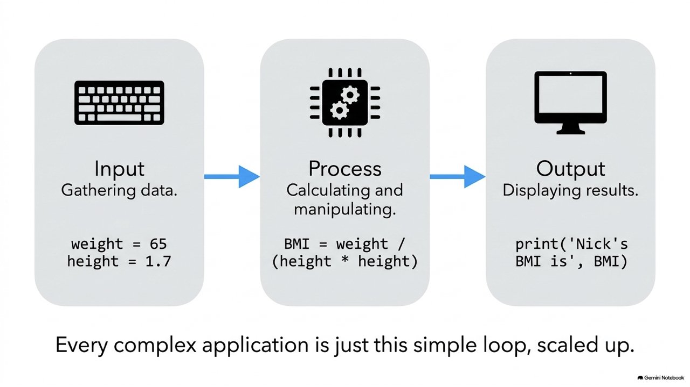
# 1. Input: 取得使用者輸入的名子 name = input("What is your name: ") # 2. Process: 字串串接與運算 helloToYou = "Hello " + name # 3. Output: 輸出問候字串 print (helloToYou) # 使用變數儲存資料進行計算 name = "Nick" weight = 65 height = 1.7 # 計算 BMI BMI = weight / (height * height) print (name + "'s BMI is", BMI)
=
x = 100 # 宣告一個整數變數 x y = 200 # 宣告一個整數變數 y p = q = 100 # 多重宣告：將 p 和 q 都設定為 100 name, eng, math = "Nick", 92, 88 # 同時宣告多個變數並賦值
_
3employee
&
#
*
@
-
my-var
total
Total
import
for
else
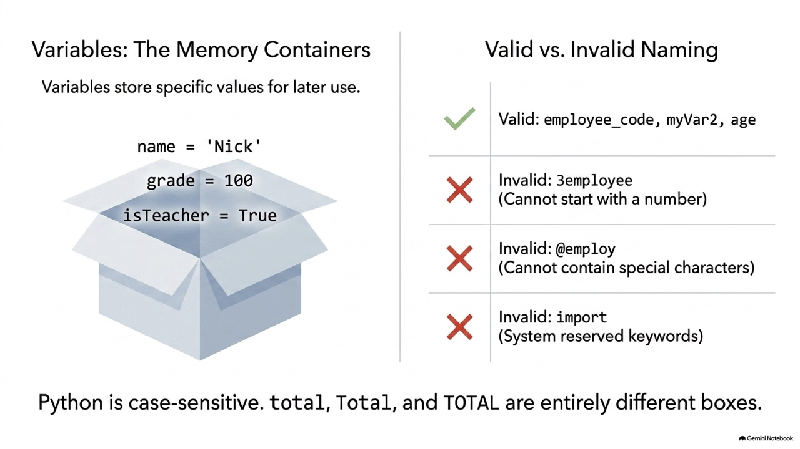
False
None
True
and
as
assert
break
class
continue
def
del
elif
except
finally
from
global
if
in
is
lambda
nonlocal
not
or
pass
raise
return
try
while
with
yield
# 錯誤命名示範 and = 1 # 語法錯誤：and 是保留字 @employ = 1 # 語法錯誤：不可包含 @ 特殊字元 # 正確命名示範 grade = 100 temperature = 8.9 name = "John" isTeacher = True
下列哪一個選項不能被用來當作變數名稱？
A. age
age
B. import
C. address
address
D. pi
pi
解析：
int
5
-10
1000
float
3.14
-0.5
2.0
str
'Hello'
"Python"
bool
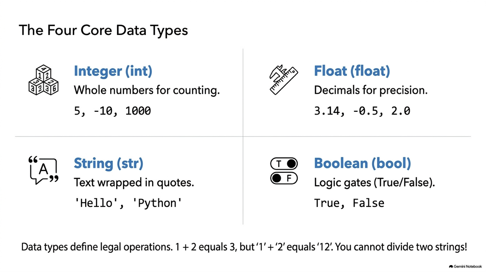
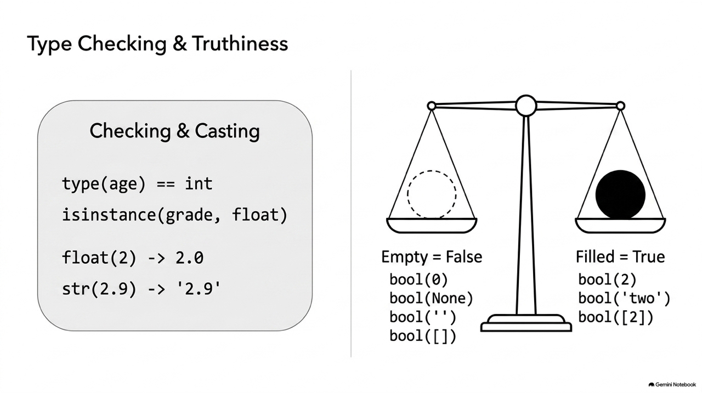
# 數字型態運算 a = 1 b = 2 print (a + b) # 輸出：3 (數學加法) # 字串型態運算 a = '1' b = '2' print (a + b) # 輸出：12 (字串串接) # print (a / b) # 錯誤：字串型態不支援除法運算！
type()
isinstance()
grade = 89 temperature = 32.5 isTeacher = True print(type(grade)) # 輸出: <class 'int'> print(type(temperature)) # 輸出: <class 'float'> # 檢驗型態是否符合 print(type(grade) == int) # 輸出: True print(isinstance(grade, float)) # 輸出: False print(isinstance('two', str)) # 輸出: True print(isinstance(2==2, bool)) # 輸出: True
float(2) # 整數 2 轉為浮點數 2.0 int(2.9) # 浮點數 2.9 轉為整數 2 (直接捨去小數點，不四捨五入) str(2.9) # 浮點數 2.9 轉為字串 '2.9' # 布林轉換：數值零、None、空的容器(字串、串列)會被轉換為 False bool(0) # False bool(None) # False bool('') # False # 非零、非空的物件都會被轉換為 True bool(2) # True bool('two') # True
ord(char)
chr(code)
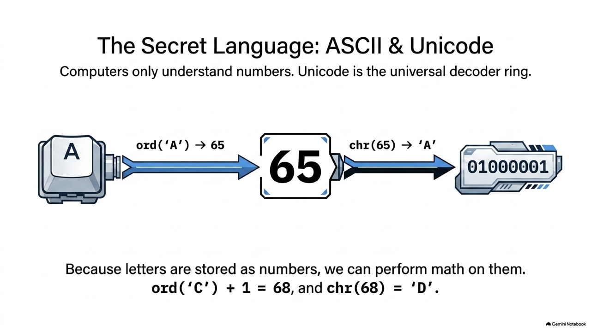
# 查詢字元編碼 print(ord('A')) # 65 print(ord('嗨')) # 21995 # 查詢編碼對應字元 print(chr(66)) # 'B' print(chr(21996)) # '㗎' # 實際應用：字元偏移運算 (求 C 的下一個字母) current_char = 'C' next_char = chr(ord(current_char) + 1) print(next_char) # 'D'
ord()
'a'
a_code = ord('a') # 取得 'a' 的 ASCII 碼 97 print('The ASCII code of a is', a_code) # 遍歷 97 ~ 122，轉換並印出字元 for i in range(a_code, a_code + 26): print(chr(i), end=' ') # 輸出結果： # The ASCII code of a is 97 # a b c d e f g h i j k l m n o p q r s t u v w x y z
下列程式碼執行後，螢幕上會印出什麼結果？
print(bool(None), bool('False'))
A. False False
False False
B. False True
False True
C. True False
True False
D. True True
True True
bool(None)
bool('False')
'False'
+
3 + 2
/
8 / 2
4.0
//
8 // 3
2
%
8 % 3
**
2 ** 3
8
+=
-=
a += 1
a = a + 1
round()
round(3.51)
4
round(3.49)
3
round(2.5)
round(3.5)
round(4.5)
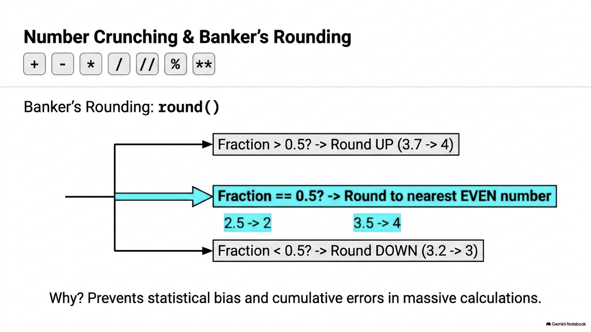
dist = 384400 # 地球到月球距離 speed = 1225 # 馬赫時速 total_hours = dist / speed # 小時 # 1. 傳統除法與餘數 days = total_hours // 24 hours = total_hours % 24 # 2. 使用 divmod() 同時求商與餘數 days, hours = divmod(total_hours, 24) xmins = 60 * (hours - int(hours)) mins, secs = divmod(xmins, 60) secs = 60 * (secs - int(secs)) print('共需 {} 天 {} 小時 {} 分 {} 秒'.format(days, int(hours), int(xmins), int(secs))) # 輸出：共需 13.0 天 1 小時 47 分 45 秒
下列程式碼執行後，其輸出結果為何？
print(10 // 4, round(3.5))
A. 2.5 4
2.5 4
B. 2 3
2 3
C. 2 4
2 4
D. 2.5 3
2.5 3
10 // 4
0.5
"Hello, " + "world"
"Hello, world"
"abc" * 3
"abcabcabc"
[]
"Python"[0]
"P"
[:]
"Python"[1:4]
"yth"
"e" in "Hello"
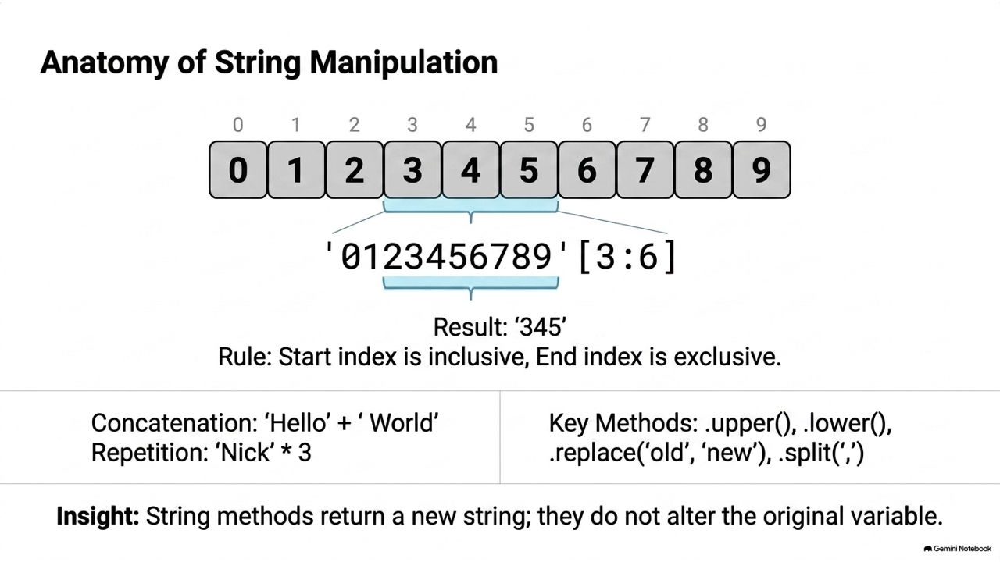
name = "Nick" print(name * 3) # 輸出: NickNickNick print('N' in name) # 輸出: True # 字串索引與切片 s = "0123456789" print(s[5]) # 輸出: 5 (從 0 開始數起) print(s[3:6]) # 輸出: 345 (只取得索引 3, 4, 5 的字元) # 字串基本函式 hello = "Hello, Nick" print(hello.upper()) # HELLO, NICK print(hello.replace('Hello', 'Hi')) # Hi, Nick print(hello) # 注意！字串在 Python 中是不可變的，原值不變
給定字串 s = "Python"，執行 print(s[1:4]) 會印出什麼？
s = "Python"
print(s[1:4])
A. "yth"
B. "pyth"
"pyth"
C. "ytho"
"ytho"
D. "y"
"y"
P:0, y:1, t:2, h:3, o:4, n:5
s[start:end]
s[1:4]
1, 2, 3
==
!=
<
>
<=
>=
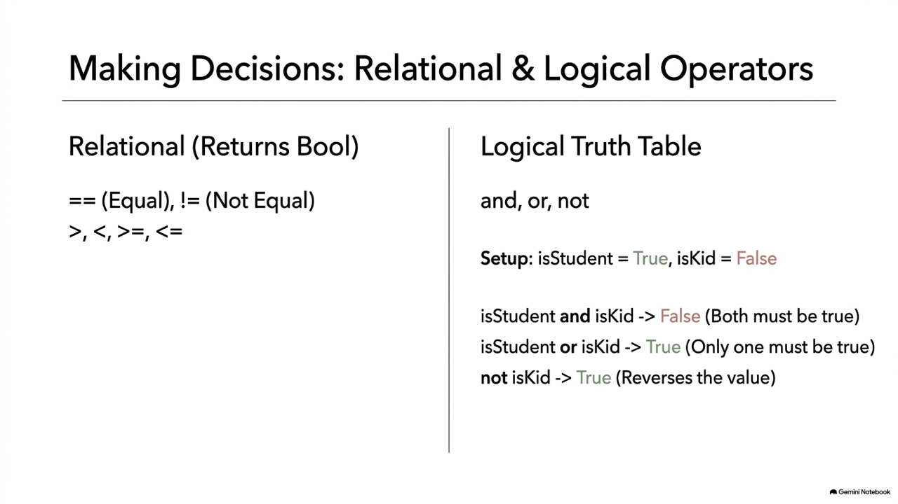
# 關係運算 print(11 > 2) # True print(11 >= 11) # True print(11 != 2) # True # 邏輯運算 a = 11 > 2 # True b = 1 > 9 # False print(a and b) # False (True and False) print(a or b) # True (True or False) print(not a) # False (not True)
下列邏輯表達式運算後的結果為何？
is_student = True is_kid = False print(is_student or is_kid and not is_student)
A. False
B. True
C. None
D. TypeError
TypeError
not is_student
not True
is_kid and False
False and False
is_student or False
True or False
input()
split()
eval()
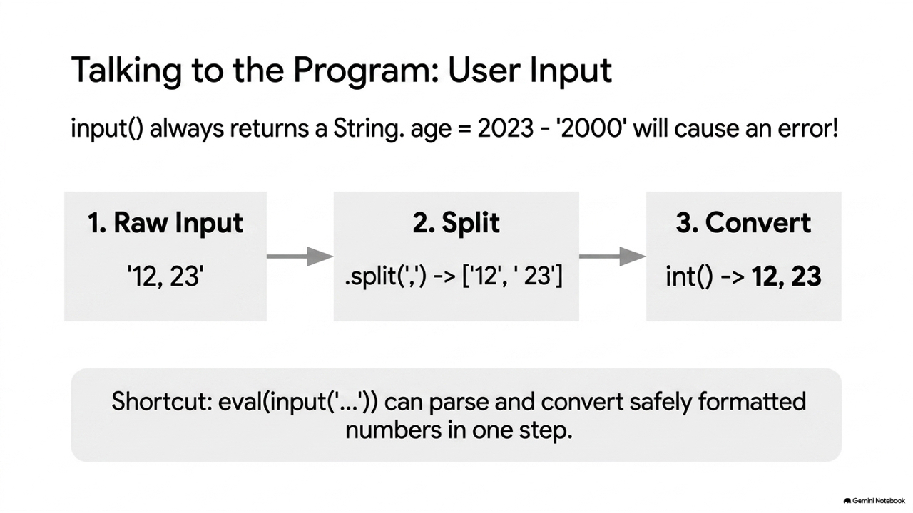
# 解析空白間隔的多個輸入 a1, a2 = input("請輸入你和你哥哥的年齡（以空白分隔）: ").split() age_diff = int(a2) - int(a1) print('年齡差:', age_diff) # 使用 eval() 簡化逗號間隔的輸入與自動轉型 age1, age2 = eval(input("請輸入兩人的年齡（以逗號分隔，例如 12,23）: ")) print(age1, age2, type(age1)) # 12 23 <class 'int'>
f"{name} 歲數是 {age}"
.format()
"{} 歲數是 {}".format(name, age)
"%s 歲數是 %d" % (name, age)
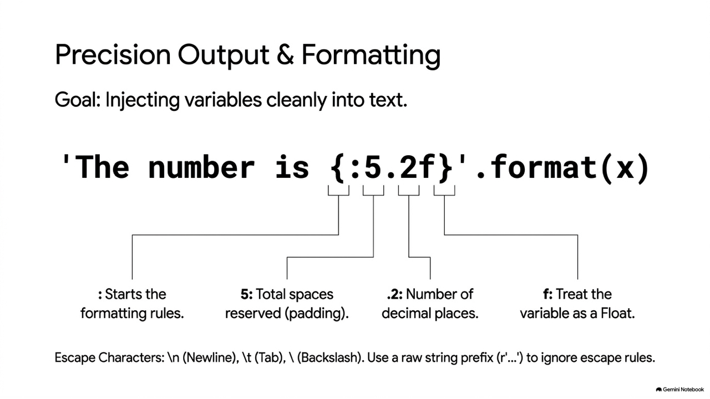
# 1. 舊式 % 排版 print("'%5d'" % 12) # 右對齊，寬度 5 格 -> ' 12' print("'%-5d'" % 12) # 左對齊，寬度 5 格 -> '12 ' print("'%8.2f'" % 3.1415) # 浮點數，小數 2 位，寬度 8 格 -> ' 3.14' # 2. format() 排版 print("{:>5d}".format(12)) # 右對齊，寬 5 -> ' 12' print("{:<5d}".format(12)) # 左對齊，寬 5 -> '12 ' print("{:8.2f}".format(3.1415)) # 寬 8，小數 2 位 -> ' 3.14' print("{:<10s}".format("hello")) # 字串左對齊，寬 10 -> 'hello '
\
\n
\t
\\
r
f
print("first line\nsecond line") # 換行 print(r"raw string: first line\nsecond line") # 輸出原本的 \n
with open()
'w'
print(..., file=f)
'r'
f.readline()
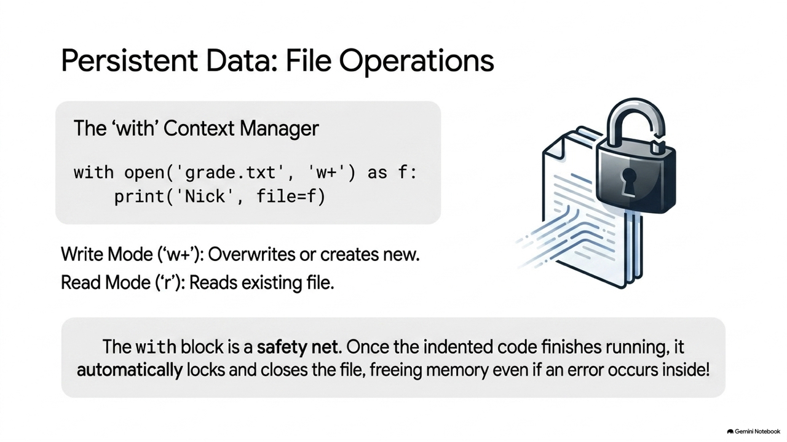
# 1. 寫入學生成績檔 with open("grade.txt", "w", encoding="utf-8") as f: print('張三', file=f) print('100, 20, 40', file=f) print('李四', file=f) print('90, 50, 100', file=f) # 2. 讀取學生成績並計算平均 with open("grade.txt", "r", encoding="utf-8") as f2: st1 = f2.readline().replace('\n', '') # 讀取 '張三' st1a, st1b, st1c = eval(f2.readline()) # 讀取三科成績 st1d = (st1a + st1b + st1c) / 3 print("{} 的平均成績為: {:5.1f}".format(st1, st1d)) st2 = f2.readline().replace('\n', '') # 讀取 '李四' st2a, st2b, st2c = eval(f2.readline()) # 讀取三科成績 st2d = (st2a + st2b + st2c) / 3 print("{} 的平均成績為: {:5.1f}".format(st2, st2d))
在 Python 中進行檔案讀寫時，使用 with open(...) 的主要優點是什麼？
with open(...)
A. 檔案的寫入速度會比傳統 open() 快速很多。
open()
B. 能自動將寫入的資料進行壓縮，節省硬碟空間。
C. 無論程式是否正常結束或發生異常，都會自動關閉檔案。
D. 能夠自動修正程式碼中的語法錯誤。
close()
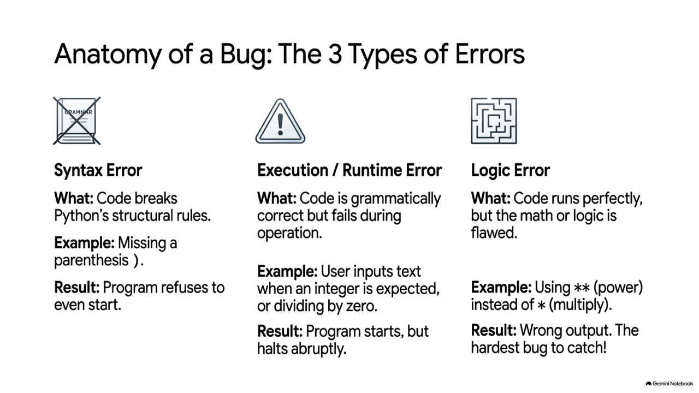
# 1. 語法錯誤 (Syntax Error) radius = int(input("The radius? ") # 括號不匹配，會直接報 SyntaxError
# 2. 執行期錯誤 (Runtime Error) radius = int(input("The radius? ")) # 如果使用者輸入 "1.1"，整數轉型失敗崩潰 # 修正為： radius = float(input("The radius? "))
# 3. 邏輯錯誤 (Logic Error) area = radius ** radius * 3.14 # 錯誤公式（** 代表次方，應為 radius * radius）
# 4. 最佳實踐：使用命名常數 ( PI ) 提高可維護性 PI = 3.14159 radius = float(input("The radius? ")) area = radius * radius * PI # 易讀且易於日後修改 PI 的精確度
'''
"""
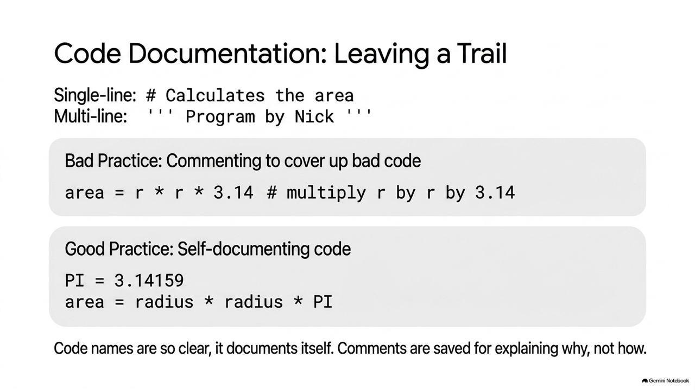
''' 本程式用來排序一群資料 這群資料是隨機產生的 透過氣泡排序法來排序 by Nick Hsueh ''' import random a = [] # 單行註解：隨機的產生10個數字 for i in range(10): a.append(random.randint(1,100)) print(a) # 行內註解：印出原始資料 s = len(a); r = s-1 for i in range(1, r+1): for j in range(0, s-i): # 將 a[j] 與 a[j+1] 的資料對調 if a[j] > a[j+1]: temp = a[j] a[j] = a[j+1] a[j+1] = temp print("排序後結果:", a)
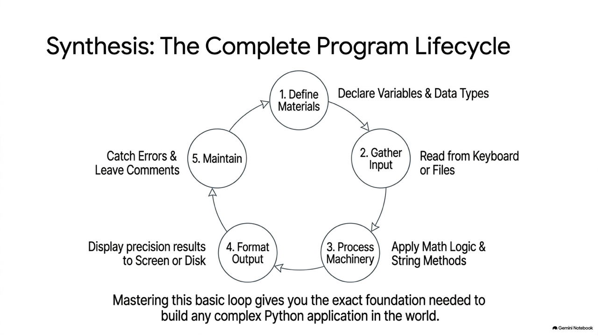
d = int(input('')) # d 為直徑，此行勿改 r = d / 2 # 計算半徑 a = round(r * r * 3.14, 2) # 面積 p = round(d * 3.14, 2) # 周長 print(a) # 此行勿改 print(p) # 此行勿改
day = int(input('')) # 1號是星期1，(day - 1) % 7 結果為 0~6，再 +1 即為 1~7 ans = (day - 1) % 7 + 1 print(ans)
華氏 = 攝氏 * ( 9 / 5 ) + 32
c = int(input('')) # c 為攝氏，此行勿改 f = round(c * (9 / 5) + 32, 2) print (f) # f 為華氏，此行勿改
** 0.5
x1, y1 = eval(input('')) # 第一個座標 x2, y2 = eval(input('')) # 第二個座標 # 計算兩點距離公式 d = ((x1 - x2) ** 2 + (y1 - y2) ** 2) ** 0.5 print(d)